11. Additional Features
User Settings
Also in the upper right corner, by clicking in the gear-like icon, OmniDB will open the User Settings pop-up. It is composed by three tabs:
- Shortcuts: Allows the user to change its shortcuts in OmniDB.
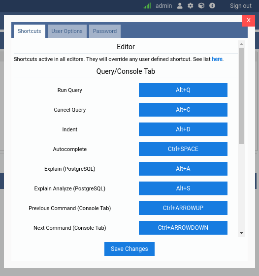
- User Options: Allows the user to change the font size of the SQL Editor and configure CSV related options. The OmniDB theme (Light/Dark) is now automatically determined by your operating system's color scheme preference.
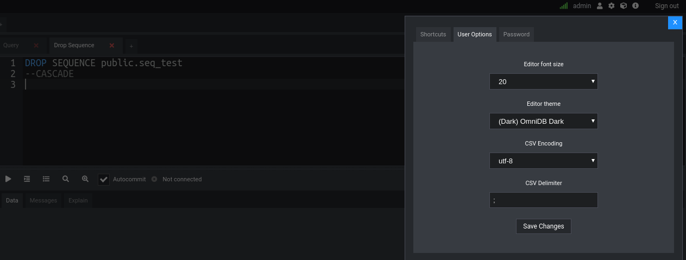
- Password: Allows the user to change its password.
Contextual Help
Most of tree nodes (generally grouping ones like Schemas or Tables) offer contextual help. This feature can be accessed by right-clicking the tree node. When you click in the Doc: ... option, OmniDB will open an inner tab showing a web browser pointing to the specific page in the online PostgreSQL Documentation. Also, it will redirect to the specific page considering the PostgreSQL version you are connected to.
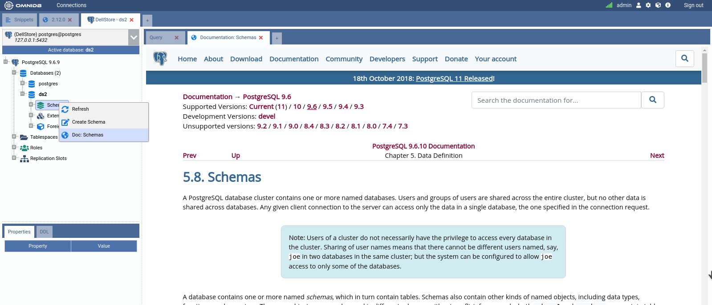
Snippets
Workspace Window has a fixed outer tab with an useful feature called
Snippets. With this feature you can store queries, command instructions and
any other kinds of text you want. You can also structure the snippets in a
directory tree the way you want. All directories and snippets you create are
stored inside of omnidb.db user database and persist when you upgrade OmniDB.
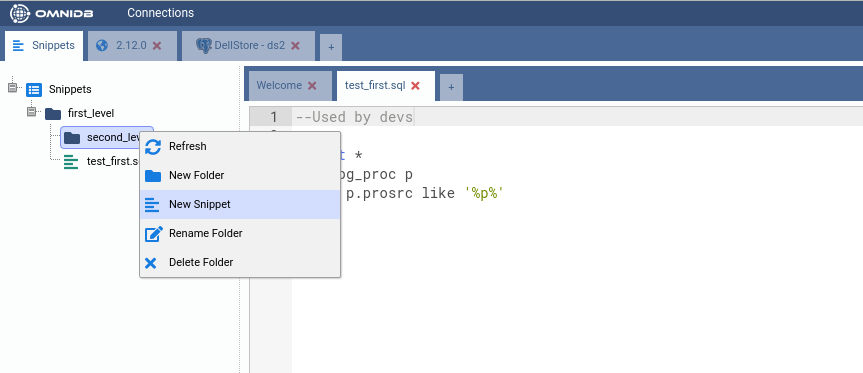
Backend Management
By right-clicking in the tree root node, then moving mouse pointer to Monitoring and then clicking on Backends, the user can see all activities going on in the database. Some information are hidden for normal users, only database superusers are allowed to see.
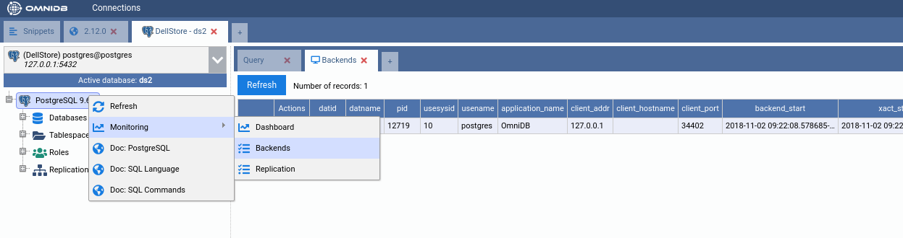
By clicking in the X in the Actions column, you can terminate the backend. A confirmation popup will appear.
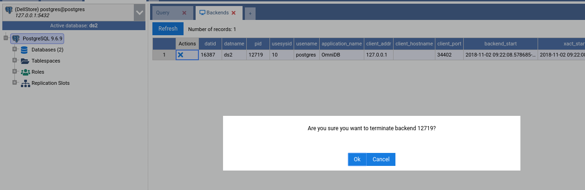
Properties and DDL
By clicking on most of objects in the tree view (tables, sequences, views, roles, databases, etc), the user will be able to see a very comprehensive list of properties of the object.
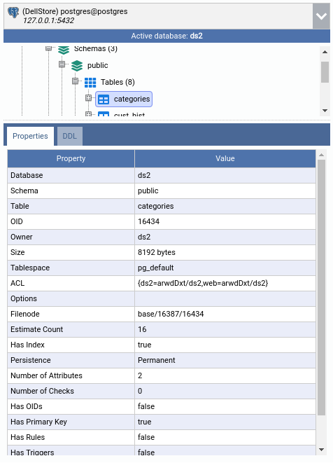
In the other panel called DDL, the user will be able to see the SQL DDL source code that can be used to re-create the object. The user can copy this text and paste it wherever he/she wants.
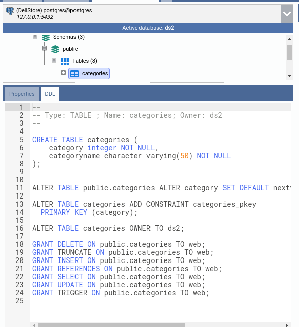
Export Data
The Query Tab provides a way to save data from query results into a CSV or XLSX file. Once you click the Export Data button, a cancellable backend starts to save data into the file. Once it is done, OmniDB provides a link called Save, so the user can download the file.
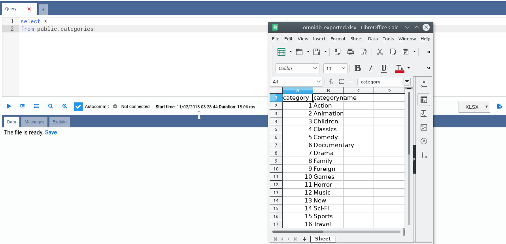
All files are stored in a temporary folder inside OmniDB folder. OmniDB regularly cleans this folder, keeping only files newer than 24 hours.
Query History
From the Query Tab you can click on the Command History button to see a full, browsable and searchable query tab.
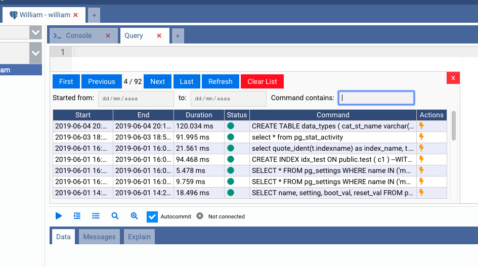
SSH Console
OmniDB also provides a full-featured SSH Console.
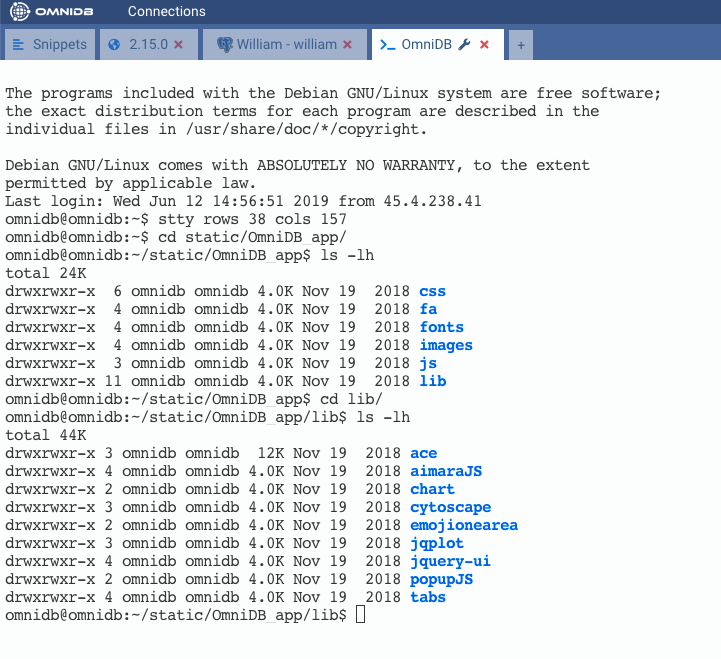